Создание игр в Roblox Studio
Программирование на Lua. Циклы For и While
Что такое цикл?
Циклы - это специальные управляющие конструкции в программировании, созданные для того, чтобы более удобным и быстрым способом записывать программный код для выполнения повторяющихся действий.
Вместо того чтобы писать одно и то же действие много раз подряд, можно сразу попросить программу повторить действие то количество раз, которое вам нужно.
Бесконечные циклы. Цикл While
Задача 1 - Вращающаяся дверь
В данной задаче есть цилиндрическая дверь с вырезом, через которую можно пройти, но для этого необходимо сделать так, чтобы она начала вращаться. Решить такую задачу можно с помощью бесконечного цикла.
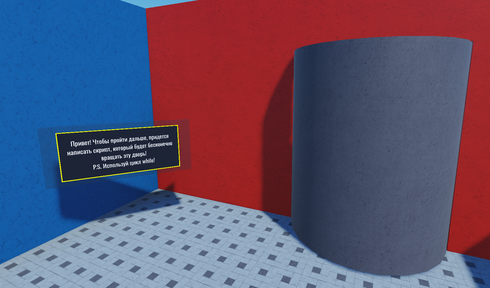В программировании есть 2 главных цикла - While и For. Главное их различие заключается в том, что While может быть бесконечным, то есть повторяться непрерывно на протяжении всей работы программы, а For обязательно заканчивается.
Для решения 1-ой задачи необходимо заставить дверь вращаться вокруг своей вертикальной оси (ось Y).
Найдём дверь в окне Explorer и добавим к ней дочерний объект Script, в котором и будем писать код для задачи:
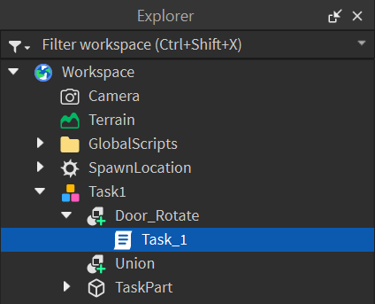После открытия скрипта первым делом необходимо удалить заранее написанный код и создать переменную со ссылкой на дверь. На этом занятии будет использован более гибкий и правильный способ ссылки на объекты.
На прошлом занятии мы создавали "жёсткую" ссылку на объект. Если целевой объект будет удалён или переименован, то скрипт не сможет найти данный объект, в результате чего ссылка станет неактивной. Поэтому мы будем использовать ссылку, основанную на родительско-дочерних отношениях - script.Parent.
Если внутри скрипта написать ключевое слово script, это будет прямым указанием на сам скрипт, в котором мы пишем код.
Таким образом, где бы ни находился этот скрипт, с помощью ключевого слова script он всегда сможет сослаться на самого себя и получить доступ к своим родительским и дочерним объектам.
Дверь Door_Rotate является родительским объектом для нашего скрипта, обратимся к ней в коде через свойство Parent:
door = script.Parent
Теперь добавим в скрипт повторяющееся действие
Нам необходимо каждый повтор цикла увеличивать угол поворота двери по оси Y.
Чтобы увеличить какую-то величину в программном коде на заданное значение, можно использовать быстрый оператор сложения +=.
Запишем эту команду в скрипте:
door.Orientation += Vector3.new(0,1,0)
Добавим в скрипт цикл While
Сначала запишем структуру цикла. While - условный цикл, то есть он будет выполняться непрерывно, пока условие его выполнения верно.
Cтруктура цикла While следующая:
while [условие] do
[тело цикла]
end
На этом занятии мы будем использовать условие true, которое всегда верно. Перенесём тело цикла внутрь конструкции:
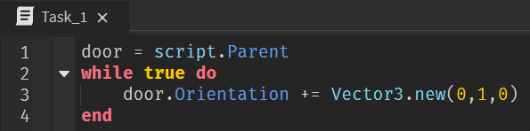Программа почти готова. Если запустить игру сейчас, то она зависнет и после этого запустится без скрипта. Это происходит из-за того, что повторения цикла выполняются слишком быстро и игра перегружается.
Добавим в скрипт паузу между повторениями цикла
Чтобы избежать зависания игры, в тело цикла нужно всегда добавлять команду wait() для небольших пауз между повторениями цикла.
Если оставить скобки пустыми, пауза будет минимальным количеством времени внутри игры. Если же написать внутрь скобок число, то мы укажем количество секунд, которое игра будет ждать.
Добавим команду wait() и закончим программу:
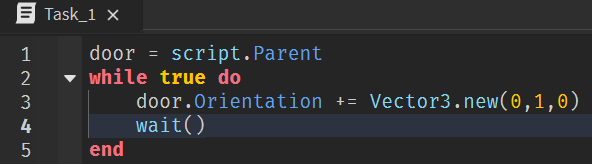Запустим игру и посмотрим на результат работы скрипта - дверь начала вращаться, и теперь мы можем идти дальше!
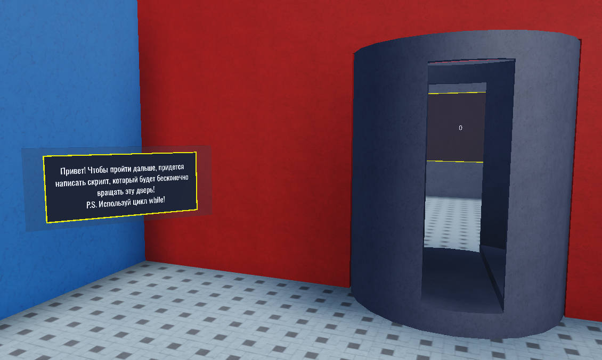Задача 2 - Бесконечно увеличивающееся число
В этой задаче необходимо написать программу, которая будет бесконечно увеличивать число на экране:
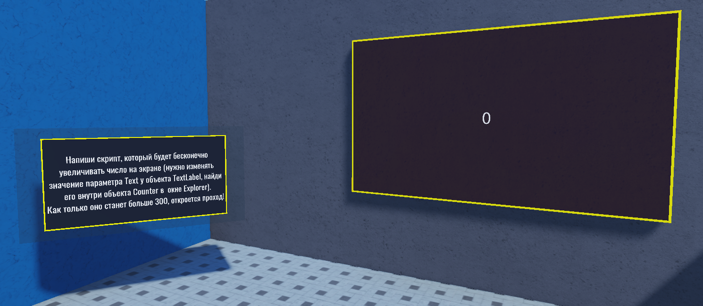В окне Explorer есть группа объектов Task2, а внутри неё есть объект Counter - это экран, на котором появляется текст. Чтобы получить доступ к этому тексту, необходимо найти в дочерних объектах TextLabel:
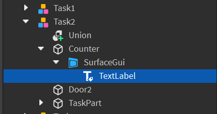У TextLabel есть параметр Text - именно в нём и хранится текст. Этот параметр мы будем изменять для того, чтобы увеличивать число.
Создадим дочерний скрипт для объекта TextLabel и отметим в нём ссылку на объект с помощью script.Parent:
textLabel = script.Parent
Добавим в скрипт переменную
Необходимо создать переменную, в которую будет записываться значение числа, выводимое на экран. Создадим переменную а:
a = 0
Добавим в скрипт бесконечный цикл и текстовую переменную
Добавим бесконечный цикл While, внутри которого эта переменная будет увеличиваться на 1. Не забываем про команду wait() для пауз:
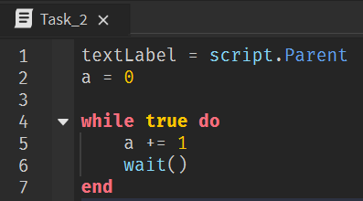Если запустить игру сейчас, то никакого эффекта не будет - переменная увеличивается, но находится только внутри скрипта и не влияет ни на что вокруг.
Добавим строку кода, в которой каждый раз после изменения переменной её новое значение будет записываться как текст объекта TextLabel:
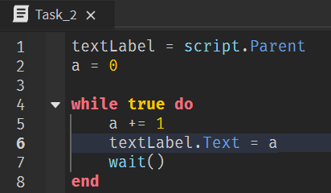Запустим игру и посмотрим на результат работы скрипта - число на экране увеличилось до 300, после чего открылся проход.
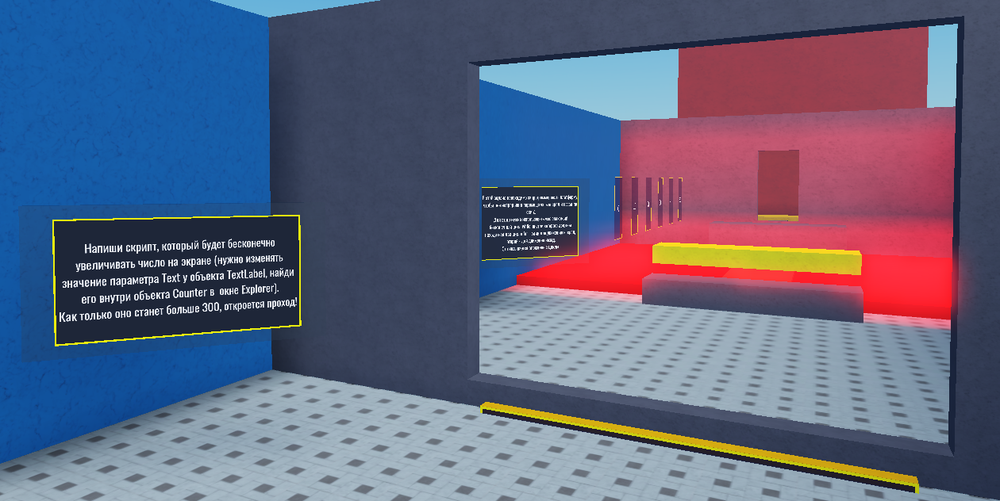Конечные циклы. Цикл For
В отличие от цикла While, цикл For используется для совершения конечных действий, то есть рано или поздно этот цикл завершается. Он применяется для множества разных задач, но в этом занятии он будет использоваться только для того, чтобы повторять какие-то действия заданное количество раз.
Цикл For пишется следующим образом:
for i=0, 15 do
[тело цикла]
end
Здесь i - это переменная-счётчик, которая будет записывать в себя, сколько раз уже повторился цикл, 0 - начальное значение цикла, 15 - количество повторений цикла.
Когда программный код дойдёт до цикла, он начнёт повторять действия, записанные в тело цикла. Каждый раз, доходя до строчки end, цикл будет автоматически увеличивать переменную i на 1, то есть считать, сколько раз уже выполнены действия. Как только переменная i станет равна количеству повторений (второму числу), цикл завершится.
Запишем следующий код, наглядно показывающий, как увеличивается значение i:
for i=0, 15 do
print(i)
wait(1)
end
Откроем окно Output и запустим игру. На каждом повторении цикла в окно Output раз в секунду будет выводиться текущее значение переменной. Окно Output расположено во вкладке View:
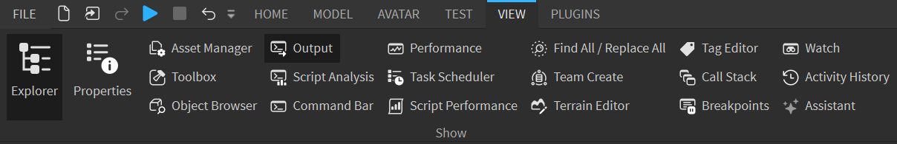Задача 3 - Перемещающаяся платформа
В этой задача необходимо заставить платформу бесконечно передвигаться от одного края локации к другому:
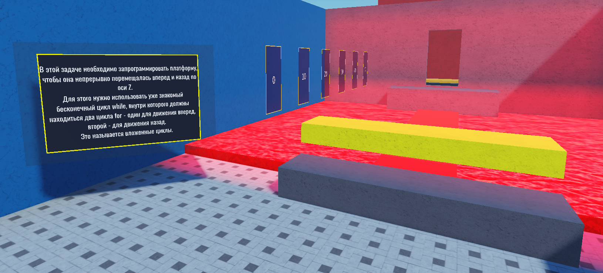Для этого нужно использовать 2 цикла For - один для движения вперёд и второй для движения назад, а также один цикл While - для бесконечного повторения действий.
За один цикл платформа должна передвигаться на 50 юнитов - расстояние указано на парящих табличках слева. Если переместить платформу сразу на 50 юнитов, как это делалось в прошлых занятиях, не будет создаваться ощущения движения. Поэтому платформа должна передвигаться плавно (шагами) - по 1 юниту 50 раз подряд.
Напишем базовую часть в новом скрипте:
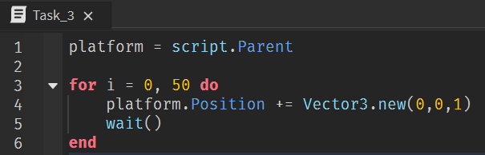Теперь запишем второй цикл For для движения назад:
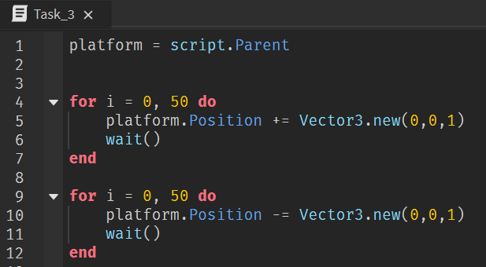Базовая часть задачи решена! Осталось сделать действия цикла бесконечно повторяющимися. Для этого нужно включить оба цикла в один большой бесконечный цикл - это называется "вложенные циклы".
Обернём циклы For в цикл While:
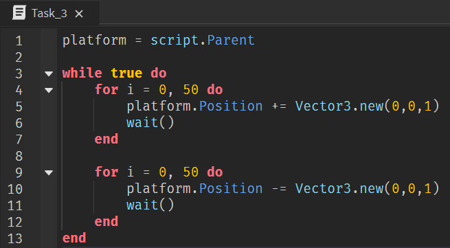Готово! Запустим игру и посмотрим на результат - платформа начала передвигаться туда и обратно!
Домашкаа 😁
Задача 4 - Летающая платформа
В данной задаче необходимо запрограммировать платформу в отдельном скрипте таким образом, чтобы она поднялась вверх, пролетела вперёд, опустилась на землю и затем проделала тот же путь назад (цикл должен быть бесконечным):
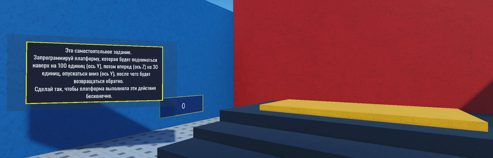Алгоритм решения тот же, что и в задаче 3, поэтому можно подсматривать в решение 3-ей задачи в конспекте.